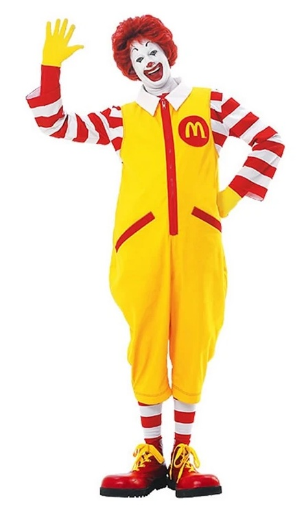
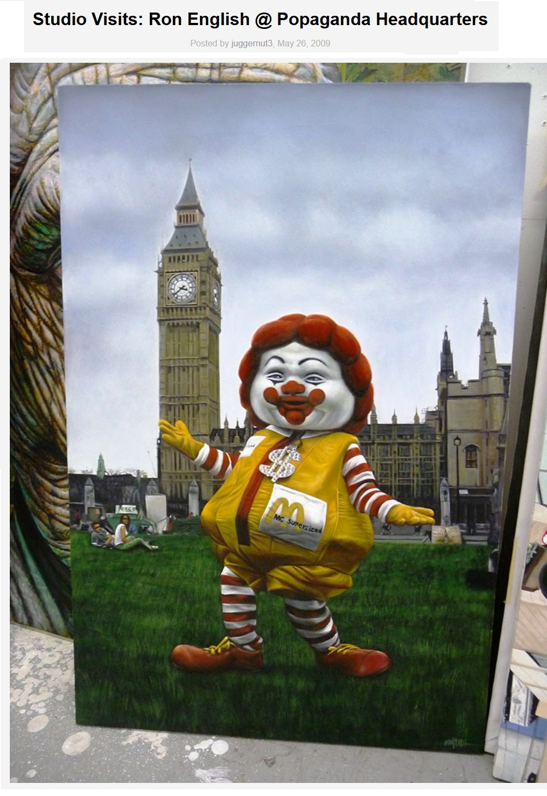

Exhibitions
Lazarus Rising, Elms Lesters Painting Rooms, London, UK, May 8–June 6, 2009.
Literature
Ron English, Lazarus Rising (London: Elms Lesters Painting Rooms, 2009), p. 33.
Ron English, Original Grin: The Art of Ron English (Paris: Cernunnos, 2019), p. 86. ISBN 978-2374950938.
Notes
The work’s inclusion in Lazarus Rising is documented in the exhibition catalogue.
Also known as MC and Big Ben.
This work references Ronald McDonald.
This work appears in studio photographs published by Arrested Motion in its 2009 studio visit to Ron English’s Popaganda headquarters.
Ancillary Documentation
The following materials document source imagery and studio-visit documentation associated with the work.

